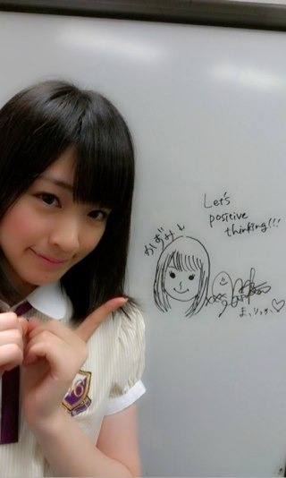

2012/0827Mon（´-`）.｡oO(かずみん×91
ヤングナデシコおめでとう＼(^o^)／
みなさん、こんばんは(*^^*)
最近若月ブログによく登場する
高山です(￣▽￣)
前回は走れ！bicycleの
感想を書いて下さって
ありがとうございました！
あっ！
せっかちなかたつむりで
どこを歌ってますか？
沢山質問がありました！
なので答えます(^-^)/
（恋とは出会い頭〜友達で終わるもの）
2番は
（私わわざとらしく〜探すんだ）
です！
地声で歌っているので、笑
ぜひ聞いてみて下さいね♪
------------
みなさんにお知らせ！
次回のぷっスマに乃木坂が出演
させていただきます(^^)
私の大好きなBerryz工房さんと
共演しました\(//∇//)\
ちょっと前のブログで
夢みたいな（*´∀`*）
仕事があったと
言いましたが、 それです！
ハロ紺やDVDで遠くから憧れて
見ていたBerryzさんと共演できて
本当に夢みたいに嬉しかったです！
私が大好きだということを
撮影の合間にも
伝える事ができました(^^)
そして激辛部、
私は辛いもの好きです！が...！
詳しくは来週のぷっスマを
見て下さいね( ´ ▽ ` )ﾉ
-------
万理華がこの前
似顔絵を書いてくれました(^-^)/

似てる〜！笑
万理華ありがとう\(//∇//)\
あと久しぶりに今日の一枚
明日誕生日のまっちゅんwithケーキ
です(*^^*)ちなみにケーキは
ゆきなbirthdayの時のですよ♪
まいやんに続いて20歳になる
まっちゅん、ちょっと早いけど
おめでとう(#^.^#)
--------
毎日公演に向けて頑張ってます！
来てくださるみなさん、
端から端まで声が届くように、
全身全霊をかけて歌いますので、
楽しみにしていて下さい！
ありがたいことに今回は
沢山の応募をいただいたそうで
チケットが抽選に
なってしまいました(>_<)
ファンのみなさん全員に
来てほしかったのにな...
でも今回が始まり。
どうなるか私も
不安でいっぱいですが
沢山公演をやっていきたいので
良いスタートダッシュをきれたら
いいと思います！
よし、明日も頑張るぞ〜(#^.^#)
それではおやすみなさい...☆
2012/08/27 00:24
コメント(422)
かずみん東京公演がんばってーー！！！
まっつん誕生日おめでとう(*^^*)
って言っといてー＼(^o^)／笑
ポジティブsay!
Say!ポジティブ
明日も頑張ってくださいねー
東京公演は全落。。。
行きたかった。。。
まぁ、また次の機会楽しみにしてる！頑張って！
行きたかった。。。
まぁ、また次の機会楽しみにしてる！頑張って！
レッスンガンバレよー(｀∀´)
ポジティブsay(-゜3゜)ノ
かずみんの声綺麗だねー！
イメージと違ってた（笑）
万理華の書いた絵似てるー
さすが生まれたときから天才って言われることだけはあるしかもサインまで！
もっとブログの更新あげてーーー
写真がいっぱい見たいよ
イメージと違ってた（笑）
万理華の書いた絵似てるー
さすが生まれたときから天才って言われることだけはあるしかもサインまで！
もっとブログの更新あげてーーー
写真がいっぱい見たいよ
やっほー
いわしだよー
番組結構写ってたね！
ホントに写真家なれる笑
すごいw
ライブ頑張ってね
じゃあね
いわし
ヤングなでしこすごいねーo(｀▽´)o
似顔絵似てる笑！
ぷっスマ見るよー(≧∇≦)
今日もお仕事がんばってねん(^_^)v
似顔絵似てる笑！
ぷっスマ見るよー(≧∇≦)
今日もお仕事がんばってねん(^_^)v
ぷっスマ出るの～！？！？！？
楽しみ～！！
激辛部はななみんとかな？？
東京公演
最終日千秋楽観にいくよ～！！！
楽しみにしてるね！！！
見るしか!!
ほんとによく若月blog出るね～ww
しかも、大抵ボケてるww
親に「この子アベイルﾕｰｻﾞｰなんだよ」って言ったら
「あ？良い子だっ!!」って言ってたww
ほんとによく若月blog出るね～ww
しかも、大抵ボケてるww
親に「この子アベイルﾕｰｻﾞｰなんだよ」って言ったら
「あ？良い子だっ!!」って言ってたww
かずみんこんばんわ～
初日公演見に行くよ～
楽しみにしてる
幕張個別まで１週間
はやく会いたいわぁ
お互いに仕事ガジ頑張ー！
初日公演見に行くよ～
楽しみにしてる
幕張個別まで１週間
はやく会いたいわぁ
お互いに仕事ガジ頑張ー！
昨日一日お疲れ様♪
せっかちなかたつむり
もう一回聞いてみよう♪
ぷっすまも絶対に見るよ！！！！
毎日公演リハで大変だね。
頑張って！！！！
それじゃあ今日も一日頑張ろう！！！！！！！！
お疲れさまです(^o^)
せっかちなかたつむりのかずみんの声めっちゃ綺麗ですね☆
ぷっスマ絶対見ますね！！
明日も頑張ってね＼(^o^)／
ポジティブSay！
せっかちなかたつむりのかずみんの声めっちゃ綺麗ですね☆
ぷっスマ絶対見ますね！！
明日も頑張ってね＼(^o^)／
ポジティブSay！
ぷっスマ楽しみ!
東京公演落選して
見に行けない(泣)
かずみんのダンスや歌
見たかった！
次のライブがあったときは
見に行きたい
かずみん東京公演頑張って
成功させてファンの
みんなを喜ばせてね♪
かずみんレッスンや仕事
頑張って
頑張ってるかずみんが好きだよ
(´・ω・`)
東京公演落選して
見に行けない(泣)
かずみんのダンスや歌
見たかった！
次のライブがあったときは
見に行きたい
かずみん東京公演頑張って
成功させてファンの
みんなを喜ばせてね♪
かずみんレッスンや仕事
頑張って
頑張ってるかずみんが好きだよ
(´・ω・`)
一番、綺麗なのになぁ?！
洗濯に５時間とか笑ったし。
かずみん今日もお疲れさん。
乃木坂ってどこ？見たからそろそろ寝ます。おやすみ?。
かずみん今日もお疲れさん。
乃木坂ってどこ？見たからそろそろ寝ます。おやすみ?。
ヤッシーです(^-^)v
ぷっすま、必ず見ます!!
俺も辛いの大好き!!
へばっまずな(^-^)/~~
ぷっすま、必ず見ます!!
俺も辛いの大好き!!
へばっまずな(^-^)/~~
ぷっすま
観なきゃね!!
俺ね、
昔からくさなぎさんの
大ファンなんですよ!!
(*´∇｀)ノ
かずみさんが一緒に出るなんて
すごいですっ
ヾ(=^▽^=)ノ
観なきゃね!!
俺ね、
昔からくさなぎさんの
大ファンなんですよ!!
(*´∇｀)ノ
かずみさんが一緒に出るなんて
すごいですっ
ヾ(=^▽^=)ノ
洗濯５時間は長いよ！
公演外れました（泣）
キャンセル待ちに応募しておいたけど、どうなることやら。
公演行きたいな～。
公演外れました（泣）
キャンセル待ちに応募しておいたけど、どうなることやら。
公演行きたいな～。
ボルボックス動画で見た、
可愛いね！
なんか好きになりそう…
そんなこんなの、
かずみんの歌声大好き、
ゆう。 です。
前回の
雪塩味ちんすこう
美味しそうだね、
ちんすこうを見ると
乃木坂ちんすこう事件を思い出すよ（笑）
なつかしい（笑）
乃木坂、楽しい！
今日の
「乃木どこ」生誕祭
いい内容だったなぁ…
あしゅりんが
「乃木坂に入って、尊敬する人を見付けた…
それは自分のお姉さんである
乃木坂メンバー全員…」
って、可愛すぎるでしょ、
かずみん？
あしゅりんのこと抱きしめてあげたくなるね！
なんか、感動して涙でてきたもん…
やっぱ
乃木坂メンバー最高だよ！
みんなが言ってた
全員収録は次週放送なんだね、運動会楽しそう！
かずみんの
そばほお張りも、
可愛い！今から保存版決定だな…。
そして、
かずみんが前に、
「夢のような仕事をしてきた…」って言ったのは、
やっぱ『ぷっすま』だったのですね！
来週のぷっすま、激辛部予告に、
かずみんがいた…、
まいやんといくちゃんは、泣いていたけど
ななみんなら
激辛部、入部決定だよね！
久しぶりに、ぷっすま見たけど、来週予告で、
乃木坂46を見られるとは、ラッキー、ぜひ見なくては…。
あと、雑誌smartの、
かずみんが上戸彩さんの
「涙をふいて」を紹介してる記事を読んだよ、
かずみんが元気をもらいたい時に聴く曲って言ってたから、ちょっと気になったけれど、
わたしの元気になれる歌、曲は、
乃木坂46なので、
これからも、こっちは、
かずみんやメンバーの、
歌声を聴きます。
そして、遅ればせながら、
3rdの感想です。
やっぱり
『走れ!Bicycle』は凄くいい！
これから乃木坂46の定番曲になったり、
ライブの定番になるよね！
かずみんが言ってた、
曲の中で、恋愛の気持ちを言う所の
『今だ！そこ！』って言うの、
わたしは2番のサビ後半って、感じたけど、
かずみんはどこだったのだろう…、
あと、走れ!Bicycle
MVでは、
かずみんの笑顔が１番良いね！
ジャケットも全部良かった、
Ｃtypeのジャケット中の『せっかちなかたつむり』の所の
かずみんの表情、好き。
その、
『かたつむり』は、可愛い曲で、歌詞も可愛いよね、
かずみんの所、じっくり聴いてみるね！
『音が出ないギター』も、
かっこよくて、
かずみんの歌声が、よく聴こえる所も多いし、
MVの表情もいい！
また新たな、
かずみんが開発されている、
また新たな、
かずみんの可能性の大きさも見える曲で、
これも好きだなぁ…、
一曲一曲聴いていると、
その時は、それが１番良い、好きかな？って思って、
『人はなぜ走るのか？』も、
聴いたら、これが１番好きかな？って思った、
MVのかずみんの表情が、
良いのが多いし、
歌詞の中に
♪「人はどうして笑い始めたんだろう？…
誰かに愛を伝えたかったのかな」って、あるのが、
まさに、
かずみんの今の笑顔そのものだから、
なんか、凄くいいなぁって思った。
どの曲も、
乃木坂46の為に、作ってくれて、
そこに秋元先生が
メンバーのことを思いながら歌詞をつけてくださって、
乃木坂メンバーが歌う…、
凄く伝わってくるし、
自分の中では、
宝物が増えていくので、
とっても嬉しいです、
どれが良いかは、やっぱり決められませんね、
全部良いです。
今、乃木坂46の曲を聴きながら、コメント書いてます、
本当に良い音楽と、
かずみんと、みんなの歌声がいいね…
ほっこり、ニヤニヤ表情になって、
もう幸せな気分になっています、
乃木坂46、かずみん
大好き。
あと、昨日一回見た↓
かずみんのぶらり旅は、
面白かった、
最初に「ガジがんばります」って言う所、
かずみん、がんばりますだけ言おうとして、
後から「ガジ」を付けたから、
「かずみん、忘れたな！？」って、ツッコンだ（笑）
でも、
メイド姿、
凄い、いいじゃん！
可愛いよ！
最後の浴衣姿も超いいし、もっと浴衣姿見たかった…
でも、その為に
かずみん浴衣姿ブログに載せてくれたから、
いいかな…、
やっぱ、
かずみんをいっぱ見られるのは最高に嬉しい！
もうすぐ9月2日
幕張握手会だし、
ワクワクする、楽しみ！
ライブも9月4日の
チケット取ったよ、
かずみん、
連日
レッスンなど大変そうだね、
がんばって下さいね、
あまり焦らないで、
一日一日のステージで、
私達ファンと一緒に、
これから、どんどん良いものを作っていけたらいいんじゃないかなぁ…、って思っていますし、
かずみん達の、ライブなどに取り組む気持ちなど、
ファミリーはわかっているので、
ポジティブに行きましょう！
ななせまるのセピア写真は凄く良かったよ！
それと、若月ブログに、よく登場する、
かずみん、
洗濯機を回す時間、
もう少し減らして、
節電しましょう（笑）。
また、何か思い出したら、
コメントさせてもらいます。
かずみん、
本当に、
いつも、ありがとう。
可愛いね！
なんか好きになりそう…
そんなこんなの、
かずみんの歌声大好き、
ゆう。 です。
前回の
雪塩味ちんすこう
美味しそうだね、
ちんすこうを見ると
乃木坂ちんすこう事件を思い出すよ（笑）
なつかしい（笑）
乃木坂、楽しい！
今日の
「乃木どこ」生誕祭
いい内容だったなぁ…
あしゅりんが
「乃木坂に入って、尊敬する人を見付けた…
それは自分のお姉さんである
乃木坂メンバー全員…」
って、可愛すぎるでしょ、
かずみん？
あしゅりんのこと抱きしめてあげたくなるね！
なんか、感動して涙でてきたもん…
やっぱ
乃木坂メンバー最高だよ！
みんなが言ってた
全員収録は次週放送なんだね、運動会楽しそう！
かずみんの
そばほお張りも、
可愛い！今から保存版決定だな…。
そして、
かずみんが前に、
「夢のような仕事をしてきた…」って言ったのは、
やっぱ『ぷっすま』だったのですね！
来週のぷっすま、激辛部予告に、
かずみんがいた…、
まいやんといくちゃんは、泣いていたけど
ななみんなら
激辛部、入部決定だよね！
久しぶりに、ぷっすま見たけど、来週予告で、
乃木坂46を見られるとは、ラッキー、ぜひ見なくては…。
あと、雑誌smartの、
かずみんが上戸彩さんの
「涙をふいて」を紹介してる記事を読んだよ、
かずみんが元気をもらいたい時に聴く曲って言ってたから、ちょっと気になったけれど、
わたしの元気になれる歌、曲は、
乃木坂46なので、
これからも、こっちは、
かずみんやメンバーの、
歌声を聴きます。
そして、遅ればせながら、
3rdの感想です。
やっぱり
『走れ!Bicycle』は凄くいい！
これから乃木坂46の定番曲になったり、
ライブの定番になるよね！
かずみんが言ってた、
曲の中で、恋愛の気持ちを言う所の
『今だ！そこ！』って言うの、
わたしは2番のサビ後半って、感じたけど、
かずみんはどこだったのだろう…、
あと、走れ!Bicycle
MVでは、
かずみんの笑顔が１番良いね！
ジャケットも全部良かった、
Ｃtypeのジャケット中の『せっかちなかたつむり』の所の
かずみんの表情、好き。
その、
『かたつむり』は、可愛い曲で、歌詞も可愛いよね、
かずみんの所、じっくり聴いてみるね！
『音が出ないギター』も、
かっこよくて、
かずみんの歌声が、よく聴こえる所も多いし、
MVの表情もいい！
また新たな、
かずみんが開発されている、
また新たな、
かずみんの可能性の大きさも見える曲で、
これも好きだなぁ…、
一曲一曲聴いていると、
その時は、それが１番良い、好きかな？って思って、
『人はなぜ走るのか？』も、
聴いたら、これが１番好きかな？って思った、
MVのかずみんの表情が、
良いのが多いし、
歌詞の中に
♪「人はどうして笑い始めたんだろう？…
誰かに愛を伝えたかったのかな」って、あるのが、
まさに、
かずみんの今の笑顔そのものだから、
なんか、凄くいいなぁって思った。
どの曲も、
乃木坂46の為に、作ってくれて、
そこに秋元先生が
メンバーのことを思いながら歌詞をつけてくださって、
乃木坂メンバーが歌う…、
凄く伝わってくるし、
自分の中では、
宝物が増えていくので、
とっても嬉しいです、
どれが良いかは、やっぱり決められませんね、
全部良いです。
今、乃木坂46の曲を聴きながら、コメント書いてます、
本当に良い音楽と、
かずみんと、みんなの歌声がいいね…
ほっこり、ニヤニヤ表情になって、
もう幸せな気分になっています、
乃木坂46、かずみん
大好き。
あと、昨日一回見た↓
かずみんのぶらり旅は、
面白かった、
最初に「ガジがんばります」って言う所、
かずみん、がんばりますだけ言おうとして、
後から「ガジ」を付けたから、
「かずみん、忘れたな！？」って、ツッコンだ（笑）
でも、
メイド姿、
凄い、いいじゃん！
可愛いよ！
最後の浴衣姿も超いいし、もっと浴衣姿見たかった…
でも、その為に
かずみん浴衣姿ブログに載せてくれたから、
いいかな…、
やっぱ、
かずみんをいっぱ見られるのは最高に嬉しい！
もうすぐ9月2日
幕張握手会だし、
ワクワクする、楽しみ！
ライブも9月4日の
チケット取ったよ、
かずみん、
連日
レッスンなど大変そうだね、
がんばって下さいね、
あまり焦らないで、
一日一日のステージで、
私達ファンと一緒に、
これから、どんどん良いものを作っていけたらいいんじゃないかなぁ…、って思っていますし、
かずみん達の、ライブなどに取り組む気持ちなど、
ファミリーはわかっているので、
ポジティブに行きましょう！
ななせまるのセピア写真は凄く良かったよ！
それと、若月ブログに、よく登場する、
かずみん、
洗濯機を回す時間、
もう少し減らして、
節電しましょう（笑）。
また、何か思い出したら、
コメントさせてもらいます。
かずみん、
本当に、
いつも、ありがとう。
かずみん こんばんはo(^▽^)o
ヤングなでしこ強かったね！(◎_◎;)
このまま優勝目指してがんばって欲しいね！
若月ブログよくでてるね♪
洗濯機5時間は絶対おかしいよ（笑
ぷっスマでるんやね(*^o^*)
チェックするしかー！
楽しみにしとくね( ´ ▽ ` )ﾉ
まりっか作の似顔絵
たしかに似てるねΣ(￣。￣ﾉ)ﾉ
なんか特徴捉えてる気がする
りんごさん も まいやん に続いて20歳やね
のんかまだ全然20歳には見えんけど（笑
公演行きたい…
でも九州に住んでるからなかなか東京まで行けんのよね(´;ω;`)
ブログからの応援がほとんどやけど
いつも応援しちょんからね！
東京公演楽しめるといいね(*^o^*)
かずみんばんわ(*^o^*)
ぷっすまに出るとか絶対見るわ！
企画は激辛部なのか～
アンジェリカの持ち込み企画な
あれ相当ヤバイと思うんだよね
ななみんでもさすがに…
MJとか色々見たよ～
メロディックスは面白かったな
かずみんの喋り方なww
明日からお祭りなので寝ますね
地獄の2日間が始まります(>_<)
でわでわこの辺で@(・●・)@
こんばんわ～(❀╹◡╹)ﾉ
おー！
せっかちなかたつむりの
一実さんパート当たった！☆
ブログ刑事を観て、
一実さんの好感度が
ぐぐっと上がりました(⊹＾◡＾)ノo.♡ﾟ｡*
公演は観に行けないけど
応援してます！
おー！
せっかちなかたつむりの
一実さんパート当たった！☆
ブログ刑事を観て、
一実さんの好感度が
ぐぐっと上がりました(⊹＾◡＾)ノo.♡ﾟ｡*
公演は観に行けないけど
応援してます！
立て続けにライブだから体調が心配です…。
ポジティブだから大丈夫か(笑)
ライブ頑張って！ずっと応援してるよ！
ポジティブだから大丈夫か(笑)
ライブ頑張って！ずっと応援してるよ！
似顔絵、すごい似てる！
公演、頑張ってね♪
応援してるよ～(・∀・｀)☆
あたしはいつでも
かずみんを応援します！
かずみんを応援します！
かずみん( ｀.∀´）y-
みやびちゃんみやびちゃんｗｗ
多摩にみやびTシャツ着て乃木坂握手会行ってるのは内緒＼(^∀^)／
ベリの写真も沢山有るから今度プレゼントしますよ
パルコ何公演かぁ行く予定カナ
バイバイ
みやびちゃんみやびちゃんｗｗ
多摩にみやびTシャツ着て乃木坂握手会行ってるのは内緒＼(^∀^)／
ベリの写真も沢山有るから今度プレゼントしますよ
パルコ何公演かぁ行く予定カナ
バイバイ
どうも～
毎日レッスンおつかれさま～
東京公演7日だけ当たったよ～
他は全部落選だった～
かなり応募あった観たいだねぇ
せっかちなかたつむり
2番のとこ全然わからんかった～
次からはかずみんだって思いながら聴きますｗ
毎日レッスンおつかれさま～
東京公演7日だけ当たったよ～
他は全部落選だった～
かなり応募あった観たいだねぇ
せっかちなかたつむり
2番のとこ全然わからんかった～
次からはかずみんだって思いながら聴きますｗ
９月６日ライブに行くよ
楽しみにしてるね
以前にパルコ劇場行った事あるけど
本当にいい会場だよね
文化放送聴いたよ
とても楽しかった。
楽しみにしてるね
以前にパルコ劇場行った事あるけど
本当にいい会場だよね
文化放送聴いたよ
とても楽しかった。
ぷっすま楽しみだな！
バラエティでかずみんの魅力が発揮されればっ！
このさゆりんはなんで手を使ってないのかw
なんかよくわからん写真だけどほのぼのする写真だねw
チケットハズれた…
Zeppのときもそうだけど倍率高すぎてあたらん(´；ω；｀)
あとはキャンセル待ちだけど…あたらんかなぁ…
バラエティでかずみんの魅力が発揮されればっ！
このさゆりんはなんで手を使ってないのかw
なんかよくわからん写真だけどほのぼのする写真だねw
チケットハズれた…
Zeppのときもそうだけど倍率高すぎてあたらん(´；ω；｀)
あとはキャンセル待ちだけど…あたらんかなぁ…
東京公演全部落ちたー(>o<)
見たいよー見たいよー!!
かずみんどうにかして～(笑)
見たいよー見たいよー!!
かずみんどうにかして～(笑)
こんばんは♪ヽ(´▽｀)/
毎日公演の練習お疲れ様。
公演行きたかったけど実習が入ってるから行けないよー(＃￣З￣)
最悪...
ぷっすま。前から見てた番組やから乃木坂が出るのがほんま嬉しいわぁ！
録画するｾﾞｾﾞｾﾞｾﾞｾﾞｰｰｲ
今日ネプリーグ見たけど
かずみんのあのアップの髪型めっちゃ好きやわぁ♪
解答席にいなかったのが残念。
かたつむりのかずみんパート
当たってた！！
普段と声が違うから分かりにくかったf(^_^;
でも歌ってる時の声もいいな♪
明日は再試があるのでそろそろねます。
おやすみ(-_-).。oO
明日も頑張ってね♪
ポジティブ！Say ！！
毎日公演の練習お疲れ様。
公演行きたかったけど実習が入ってるから行けないよー(＃￣З￣)
最悪...
ぷっすま。前から見てた番組やから乃木坂が出るのがほんま嬉しいわぁ！
録画するｾﾞｾﾞｾﾞｾﾞｾﾞｰｰｲ
今日ネプリーグ見たけど
かずみんのあのアップの髪型めっちゃ好きやわぁ♪
解答席にいなかったのが残念。
かたつむりのかずみんパート
当たってた！！
普段と声が違うから分かりにくかったf(^_^;
でも歌ってる時の声もいいな♪
明日は再試があるのでそろそろねます。
おやすみ(-_-).。oO
明日も頑張ってね♪
ポジティブ！Say ！！
一実せんせい！更新きてたぁ。
ぷっすまは大好きなのでいつも観てますが来週はリアルタイム＆録画します。…辛いもの、好きなの？
あ、さっき９０の方に乃木どこの感想書きました。その時、おやすみを忘れたので…。
今日も一日、お疲れ様でした。おやすみなさい。また明日っ(+。+)zzz
ぷっすまは大好きなのでいつも観てますが来週はリアルタイム＆録画します。…辛いもの、好きなの？
あ、さっき９０の方に乃木どこの感想書きました。その時、おやすみを忘れたので…。
今日も一日、お疲れ様でした。おやすみなさい。また明日っ(+。+)zzz
マリカのにてるなぁ～( ´艸｀)
どーも！オレンジです！
せっかちなかたつむり、歌ってるところわからなかった(*_*)
てか、まだ1回しか聞いてない笑
東京公演当たったよぉぉぉ＼(^o^)／
4日に行きます♪
ぷっスマ、共演できてよかったね(^o^)/
必ずみるよ(*^^*)
今日のかずみんの写真、待ち受けにします(照)
かずみんにお願いがあります(>_<)
この前のめざましライブのときの髪型の写メが欲しいm(__)m
気が向いたらでいいから目を通したらやってください笑
それじゃあこの辺で！
今日はお疲れ様(*^^*)
明日も頑張ろう
愛羅武勇
 オレンジ
オレンジ
せっかちなかたつむり、歌ってるところわからなかった(*_*)
てか、まだ1回しか聞いてない笑
東京公演当たったよぉぉぉ＼(^o^)／
4日に行きます♪
ぷっスマ、共演できてよかったね(^o^)/
必ずみるよ(*^^*)
今日のかずみんの写真、待ち受けにします(照)
かずみんにお願いがあります(>_<)
この前のめざましライブのときの髪型の写メが欲しいm(__)m
気が向いたらでいいから目を通したらやってください笑
それじゃあこの辺で！
今日はお疲れ様(*^^*)
明日も頑張ろう
愛羅武勇
また１つ夢がかなってよかったね!!
かずみんの歌声もっと聴きたいなぁ～!!乃木どことかでのしゃべる声とのギャップがまたえぇなぁ～
かずみんの歌声もっと聴きたいなぁ～!!乃木どことかでのしゃべる声とのギャップがまたえぇなぁ～
金曜日の「スパカン！」聴いたけれど・・・、
.
確かに、さゆりん の声と比べて‘どっちが可愛い？’って聞かれたら さゆりん って答える人の方が多いかもしれない。 だけれど「気持ち悪い声」なんて言っちゃダメだよ。
自分はその声と喋り方 そして笑顔、一実さんらしさが出ていて好きだよ。
そもそも、本当に気持ち悪い声だったら、メンバー誰も真似したくないだろうし、握手会は誰も一実さんのレーンに並ばないでしょ？
明菜さんだって特徴的な声の持ち主だったんだから、一実さんもその声を強みにしなきゃ。
ポジティブSay! でこそ高山一実じゃない？
.
確かに、さゆりん の声と比べて‘どっちが可愛い？’って聞かれたら さゆりん って答える人の方が多いかもしれない。 だけれど「気持ち悪い声」なんて言っちゃダメだよ。
自分はその声と喋り方 そして笑顔、一実さんらしさが出ていて好きだよ。
そもそも、本当に気持ち悪い声だったら、メンバー誰も真似したくないだろうし、握手会は誰も一実さんのレーンに並ばないでしょ？
明菜さんだって特徴的な声の持ち主だったんだから、一実さんもその声を強みにしなきゃ。
ポジティブSay! でこそ高山一実じゃない？
♪♪かずみん♪♪
こんばんは=^・^=
せっかちなかたつむり
かずみんのパート気になってたんだ～(^^)d
教えてくれてありがとう♪
あと、ぷっすま出るんだ!!
今番組表見たら、こちらは週遅れみたいやけど、必ずチェックするね!!
ーーーーチョキチョキーーーー
写真家一実の撮る写真♪
まっつん♪やっぱり食が似合うね♪シャッターのタイミングもばっちり(^^)d
さすがやね～！！
今日、なぁちゃんのブログにもかずみんの撮った写真が載ってたよ♪こちらも、なぁちゃんの笑顔が素敵に撮れてた♪
かずみんの撮る写真大好きや!!癒される～♪
レッスン&リハーサル
ガジがんばって疲れてるのに、ブログ更新ありがとう
また明日からガジがんばれるp(^^)q
かずみさん♪
ポジティブSAY!
おやすみ♪
またね(*・ｘ・)ノ~~~♪
こんばんは=^・^=
せっかちなかたつむり
かずみんのパート気になってたんだ～(^^)d
教えてくれてありがとう♪
あと、ぷっすま出るんだ!!
今番組表見たら、こちらは週遅れみたいやけど、必ずチェックするね!!
ーーーーチョキチョキーーーー
写真家一実の撮る写真♪
まっつん♪やっぱり食が似合うね♪シャッターのタイミングもばっちり(^^)d
さすがやね～！！
今日、なぁちゃんのブログにもかずみんの撮った写真が載ってたよ♪こちらも、なぁちゃんの笑顔が素敵に撮れてた♪
かずみんの撮る写真大好きや!!癒される～♪
レッスン&リハーサル
ガジがんばって疲れてるのに、ブログ更新ありがとう
また明日からガジがんばれるp(^^)q
かずみさん♪
ポジティブSAY!
おやすみ♪
またね(*・ｘ・)ノ~~~♪
あのー日本の人口って何人でしたっけ？
そんなライブ抽選で惨敗した、おれです(T_T)
そうだね、始まりだよね。
いつか、かずみんのガジ頑張りの成果を見るぞ！！
ポジティブSay!
かずみん失調症になりつつあった、おれ。
かずみん個人PVで、なんとか回復！(笑)
最後の浴衣姿で、やられたー(>_<)
大人っぽさと、色っぽさ？めっちゃええわぁー(笑)
そんなライブ抽選で惨敗した、おれです(T_T)
そうだね、始まりだよね。
いつか、かずみんのガジ頑張りの成果を見るぞ！！
ポジティブSay!
かずみん失調症になりつつあった、おれ。
かずみん個人PVで、なんとか回復！(笑)
最後の浴衣姿で、やられたー(>_<)
大人っぽさと、色っぽさ？めっちゃええわぁー(笑)
かずみん、こんにちは。
あこがれの人たちと共演できて、よかったですね！！ いつかかずみんにも共演するのにあこがれていましたと言ってくれる後輩アイドルがやってくるよう、応援していきます！
乃木どこ見ました。ボルボックスで手をあげたかずみん、知的な魅力を感じました。
かずみんの生誕祭も、まだ先だけど楽しみにしてます。
公演に向けて、楽しくも大変な毎日でしょうが、前へ頑張れ！
あこがれの人たちと共演できて、よかったですね！！ いつかかずみんにも共演するのにあこがれていましたと言ってくれる後輩アイドルがやってくるよう、応援していきます！
乃木どこ見ました。ボルボックスで手をあげたかずみん、知的な魅力を感じました。
かずみんの生誕祭も、まだ先だけど楽しみにしてます。
公演に向けて、楽しくも大変な毎日でしょうが、前へ頑張れ！
東京公演の記念すべき初日の第一回目の抽選当たったよ～。
今年１年の運を使った気がするけど、まっ、いいか。
幸せすぎる。
楽しみにしてるね。
練習がんばれ！
公演の翌日の幕張個握行くからね。
今年１年の運を使った気がするけど、まっ、いいか。
幸せすぎる。
楽しみにしてるね。
練習がんばれ！
公演の翌日の幕張個握行くからね。
かずみん、こんばんは〜(=^･ω･)ﾉ
せっかちなかたつむり、2番の方はわかったよ〜！！
でも、一番の方はちょっとわからなかったかも｡o(*｡_｡o)
まだまだ聴き込みが足りないな〜、かずみんの声って、わかりやすいよね〜！！
俺、かずみんの声めっちゃ好きなんよ〜Σｄ(ﾟ∀ﾟｄ)ｫｩｨｪ!!
だから、かずみん自分の声が気持ち悪いとか思わないで！！
文化放送聴いてたよ〜(笑)
本当に、かずみんの声めっちゃ好きなんよ！！
ポジティ〜ブヾ(-`ω´-｡)
うわ〜！！ぷっすま見るしか〜！！！
ヤバイ、めっちゃ楽しみ〜！！
かずみん激辛部なの！？Σ(ОД○*)
大丈夫〜(笑)！？
ポジティブにね〜！！！ﾟ｡+(=ﾟωﾟ)ﾉ+｡
まりたんが描いたかずみんの似顔絵めっちゃ似てる！！
めっちゃかわいいね〜！！
でも、やっぱり隣りにいるかずみんがガジかわいすぎるぜ〜いヾ(≧▽≦*)〃ヾ(*≧▽≦)〃
さゆりん、めっちゃかわいい！！
さゆりん大好きだよ〜！！！
本当に誕生日おめでとう(*ﾟ▽ﾟﾉﾉﾞ☆ﾊﾟﾁﾊﾟﾁ
また、さゆりんブログにもコメントするよ〜！！
東京公演、めっちゃ人気だね〜！！
結局俺は、チケットとれなかった｡｡(〃_ _)σ∥
ショックすぎる〜
でも、かずみん達のこと応援してるよ〜！！
ガジ頑張れ〜.+ﾟd(´∀`*)
俺もかずみんを見習って、ポジティブに！！！
じゃあ、かずみん明日もレッスンとか、お仕事頑張ってね〜
(◎´▽`)ﾉｼ
かずみんのこと、ずっと応援してるよ〜！！
東京公演、最高のステージにしてきて！！！((((oﾟ▽ﾟ)o))) ﾄﾞｷﾄﾞｷ♪
ポジティブSAY！！
せっかちなかたつむり、2番の方はわかったよ〜！！
でも、一番の方はちょっとわからなかったかも｡o(*｡_｡o)
まだまだ聴き込みが足りないな〜、かずみんの声って、わかりやすいよね〜！！
俺、かずみんの声めっちゃ好きなんよ〜Σｄ(ﾟ∀ﾟｄ)ｫｩｨｪ!!
だから、かずみん自分の声が気持ち悪いとか思わないで！！
文化放送聴いてたよ〜(笑)
本当に、かずみんの声めっちゃ好きなんよ！！
ポジティ〜ブヾ(-`ω´-｡)
うわ〜！！ぷっすま見るしか〜！！！
ヤバイ、めっちゃ楽しみ〜！！
かずみん激辛部なの！？Σ(ОД○*)
大丈夫〜(笑)！？
ポジティブにね〜！！！ﾟ｡+(=ﾟωﾟ)ﾉ+｡
まりたんが描いたかずみんの似顔絵めっちゃ似てる！！
めっちゃかわいいね〜！！
でも、やっぱり隣りにいるかずみんがガジかわいすぎるぜ〜いヾ(≧▽≦*)〃ヾ(*≧▽≦)〃
さゆりん、めっちゃかわいい！！
さゆりん大好きだよ〜！！！
本当に誕生日おめでとう(*ﾟ▽ﾟﾉﾉﾞ☆ﾊﾟﾁﾊﾟﾁ
また、さゆりんブログにもコメントするよ〜！！
東京公演、めっちゃ人気だね〜！！
結局俺は、チケットとれなかった｡｡(〃_ _)σ∥
ショックすぎる〜
でも、かずみん達のこと応援してるよ〜！！
ガジ頑張れ〜.+ﾟd(´∀`*)
俺もかずみんを見習って、ポジティブに！！！
じゃあ、かずみん明日もレッスンとか、お仕事頑張ってね〜
(◎´▽`)ﾉｼ
かずみんのこと、ずっと応援してるよ〜！！
東京公演、最高のステージにしてきて！！！((((oﾟ▽ﾟ)o))) ﾄﾞｷﾄﾞｷ♪
ポジティブSAY！！
レッスンお疲れ様＼(^o^)／
若月ブロックに登場する一実さん
しっかりチェックしてまっせ(^q^)
かずみんワールド全開だねw
いやぁ…これからも登場して欲しい！
ちゃんと全部みてるからね(`･ω)★
あ、せっかちなかたつむり
かずみんのパート全部
把握できてたよ＼(^o^)／ﾋﾟｯﾀﾘ！
さすが！と言ってください(*^^*)照れ
あれ地声なの(^^)？
あれで地声とか…一実さんの地声スキだわ♪
明日は登校日ー(>_<)
からの友達10人でBBQしてくるよ!!花火も!!
楽しみや＼(^o^)／
かずみんも明日１日、楽しんでね過ごしてね
若月ブロックに登場する一実さん
しっかりチェックしてまっせ(^q^)
かずみんワールド全開だねw
いやぁ…これからも登場して欲しい！
ちゃんと全部みてるからね(`･ω)★
あ、せっかちなかたつむり
かずみんのパート全部
把握できてたよ＼(^o^)／ﾋﾟｯﾀﾘ！
さすが！と言ってください(*^^*)照れ
あれ地声なの(^^)？
あれで地声とか…一実さんの地声スキだわ♪
明日は登校日ー(>_<)
からの友達10人でBBQしてくるよ!!花火も!!
楽しみや＼(^o^)／
かずみんも明日１日、楽しんでね過ごしてね
一実☆更新ありがとう！お疲れ様！
せっかちなかたつむり、またじっくり聴いてみ
るね〜！
ぷっスマ好き！絶対観るからね！
似顔絵似てる！みんな絵がうまいよね！
一実も体に気を付けて頑張ってね！
そんじゃ、またねぇ☆
今日も一実が、笑顔でありますように！！
せっかちなかたつむり、またじっくり聴いてみ
るね〜！
ぷっスマ好き！絶対観るからね！
似顔絵似てる！みんな絵がうまいよね！
一実も体に気を付けて頑張ってね！
そんじゃ、またねぇ☆
今日も一実が、笑顔でありますように！！
自分もBerryz工房大好きです、ぷっすま必ず見ますね
ひろきやで！
次回のぷっすま楽しみやー(^^)
自分の大好きな人と共演できるとかホンマに夢みたいやな(//∇//)
絶対見るな！
かずみんの似顔絵似てる(笑)
万理華上手いわーw
乃木坂の東京公演行きたいなー(泣)
受験生やし行かれへんけど、来年あったら絶対行くな！(^^)/
次回のぷっすま楽しみやー(^^)
自分の大好きな人と共演できるとかホンマに夢みたいやな(//∇//)
絶対見るな！
かずみんの似顔絵似てる(笑)
万理華上手いわーw
乃木坂の東京公演行きたいなー(泣)
受験生やし行かれへんけど、来年あったら絶対行くな！(^^)/
かずみぃぃぃぃいいいいいいん＼(^o^)／
まず先に....
東京公演外れた～～～(´°̥̥̥̥̥̥̥̥ω°̥̥̥̥̥̥̥̥｀)
本当に泣きたい
抽選系のイベント毎回干されるんだよね....
名古屋も大阪も行けなかったから、東京だけは絶対みたいと思ったのに＞＜
本当ごめーん
かずみんや他の乃木メンが1年前から成長して、元気で歌って踊る姿を見たかったのに....
次は......次は当たるといいな ←毎回言ってる
←毎回言ってる
せっかちなかたつむり私はわざとらしく～はわかったよ！
前のラジオで自分で声気持ち悪いとか言ってたけどw、歌声ほんといいよね
マジ最初に聞いた時鳥肌たったもん
かずみんこんないい声持ってるんだ！すげー！！！って。
やっぱりかずみん応援しててよかったよ
その声大事にして、もっともっとたくさんの歌歌えるようになるといいね(｡≧ω≦)ﾉ
夢みたいな仕事はBerryz工房とのコラボだったのね！ ぷっスマっていつやってんだっけ？笑
まぁ後で調べてみとくわw
お仕事楽しめてるみたいでよかった
よく似顔絵描かれるんだねwww
まぁ前のよりは良さげでよかったw
実物は比べものにならないくらい可愛いけどな
あ、俺今日大会だったんだけど、てきとーでいいやと思ってたら、珍しく力まなかったのか決勝までいけたわw
学校として出る大会は最後だったから有終の美飾れてよかったかな(*･ω･)/'''
賞状とかなかったんだけどね＞＜
何このいらない報告wwww
試合中かずみんに報告できるように頑張ったとか口が裂けても言えない言えない←
相手が共学校で女子の声援が多かったとき、俺はかずみんが応援してくれてる姿を思い浮かべて頑張ってたとかそんな気持ち悪いこと言えない言えない←
あ......笑
とりまめっちゃ疲れたー（笑）
おやすみ～
明日からも頑張りましょー！！
☆☆☆(なお・ω・やん)☆☆☆
まず先に....
東京公演外れた～～～(´°̥̥̥̥̥̥̥̥ω°̥̥̥̥̥̥̥̥｀)
本当に泣きたい
抽選系のイベント毎回干されるんだよね....
名古屋も大阪も行けなかったから、東京だけは絶対みたいと思ったのに＞＜
本当ごめーん
かずみんや他の乃木メンが1年前から成長して、元気で歌って踊る姿を見たかったのに....
次は......次は当たるといいな
せっかちなかたつむり私はわざとらしく～はわかったよ！
前のラジオで自分で声気持ち悪いとか言ってたけどw、歌声ほんといいよね
マジ最初に聞いた時鳥肌たったもん
かずみんこんないい声持ってるんだ！すげー！！！って。
やっぱりかずみん応援しててよかったよ
その声大事にして、もっともっとたくさんの歌歌えるようになるといいね(｡≧ω≦)ﾉ
夢みたいな仕事はBerryz工房とのコラボだったのね！ ぷっスマっていつやってんだっけ？笑
まぁ後で調べてみとくわw
お仕事楽しめてるみたいでよかった
よく似顔絵描かれるんだねwww
まぁ前のよりは良さげでよかったw
実物は比べものにならないくらい可愛いけどな
あ、俺今日大会だったんだけど、てきとーでいいやと思ってたら、珍しく力まなかったのか決勝までいけたわw
学校として出る大会は最後だったから有終の美飾れてよかったかな(*･ω･)/'''
賞状とかなかったんだけどね＞＜
何このいらない報告wwww
試合中かずみんに報告できるように頑張ったとか口が裂けても言えない言えない←
相手が共学校で女子の声援が多かったとき、俺はかずみんが応援してくれてる姿を思い浮かべて頑張ってたとかそんな気持ち悪いこと言えない言えない←
あ......笑
とりまめっちゃ疲れたー（笑）
おやすみ～
明日からも頑張りましょー！！
☆☆☆(なお・ω・やん)☆☆☆
なでしこおめでとぉ(^O^)
ぷっすま絶対見るわ☆
確かにせっかちなかたつむりはかずみんの声めっちゃ聞こえてくるなぁ～って思った(^O^)/
かずみんの声好きやお♪
公演当たったよ!!
楽しみにしてるからね-
無理はしんように頑張ってな(＾O)＝3
ぷっすま絶対見るわ☆
確かにせっかちなかたつむりはかずみんの声めっちゃ聞こえてくるなぁ～って思った(^O^)/
かずみんの声好きやお♪
公演当たったよ!!
楽しみにしてるからね-
無理はしんように頑張ってな(＾O)＝3
かずみんヤッホー！
「ぷっスマ」は毎週観てるけど、いきなり予告で乃木坂が出てきたから驚いた！
思わずお茶を軽く吹き出したわ…。
ももちにオイシい所を全部持ってかれてる気もするけどOAを期待してるよ♪
「ぷっスマ」は毎週観てるけど、いきなり予告で乃木坂が出てきたから驚いた！
思わずお茶を軽く吹き出したわ…。
ももちにオイシい所を全部持ってかれてる気もするけどOAを期待してるよ♪


ひょっとこのペーちゃんです
今日も一日お疲れ様
今日も仕事かなー⁇
毎日、大変やね
体調は大丈夫？
無理したあかんよー
PARCO劇場公演の練習どう⁇
大変⁇
どういう事するのか
楽しみやわー
まぁ見れないんやけど(泣)
観たいなー
来年までイベント行けないんやけど
ひょっとこのペーちゃんを覚えてくれてたらありがたいっす( • ̀ω•́ )
じゃあ
明日も一日頑張って( ^_^)/~~~